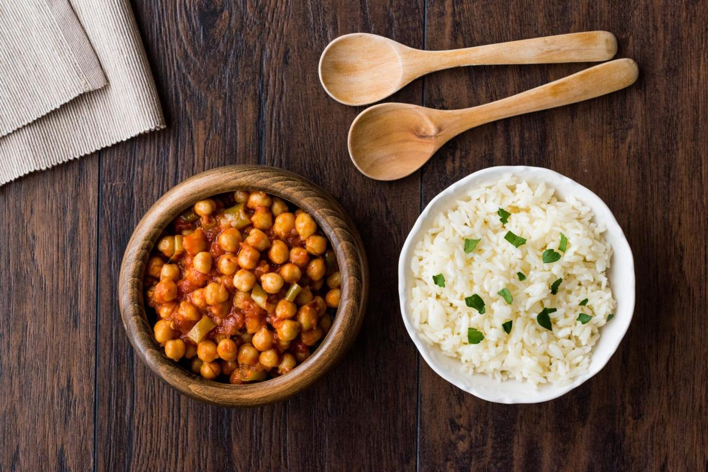

Chana Masala

Chana masala is an Indian vegetarian stew featuring creamy chickpeas
cooked in a fragrant and spicy tomato sauce anchored by a blend of spices
called garam masala. It goes by many names, including chole masala (the
name for the conventional chickpeas found in the U.S.), channay, and
chholay. Chana masala is an Indian food staple and can be found in
restaurants, street stalls, and home kitchens. On its own, this chickpea
curry is gluten-free and can be vegan, but it’s often served alongside
basmati rice, naan, or fluffy fry-breads like puri or bhatoora.
Ingredients
- Olive oil
- 1 large onion, chopped
- 3 garlic cloves, minced
- 2 tsp fresh grated ginger
- 2 cans chickpeas, drained and rinsed
- 2 tsp garam masala (a good quality curry powder will also do)
- ½ tsp turmeric
- 1 tsp. amchoor powder
- ½ tsp cayenne, or chili powder of choice, to taste
- 2 large tomatoes, diced, or 1 can diced/pureed tomatoes
- 1-2 tbsp lemon juice
- ¼ cup fresh cilantro, chopped (optional)
- Salt and pepper
Steps
-
Heat a few tablespoons of oil in a large skillet over medium heat. Add
the onion, and cook until translucent. Add the garlic, and continue to
cook until onion is golden-brown and soft.
-
Add the chickpeas, ginger, garam masala, turmeric, amchoor, chili
powder, tomatoes, and lemon juice. If you can’t find amchoor, don’t
worry: while the dried green mango powder gives the final dish a more
bright and tart character, lemon juice is a suitable and adequate
substitute.
- Season with salt and pepper.
-
Lower heat, and bring to a simmer. Cook for 8-10 minutes, stirring
frequently, until slightly thickened and chickpeas have begun to break
down. If too thick, add a bit of water.
- Remove from heat, and serve topped with cilantro if desired.